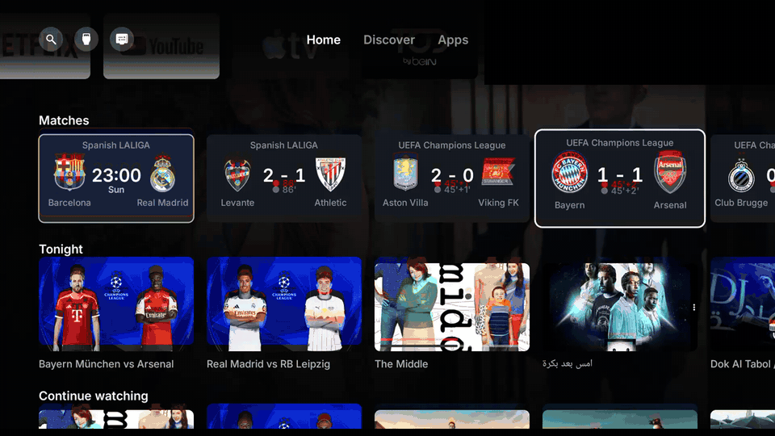
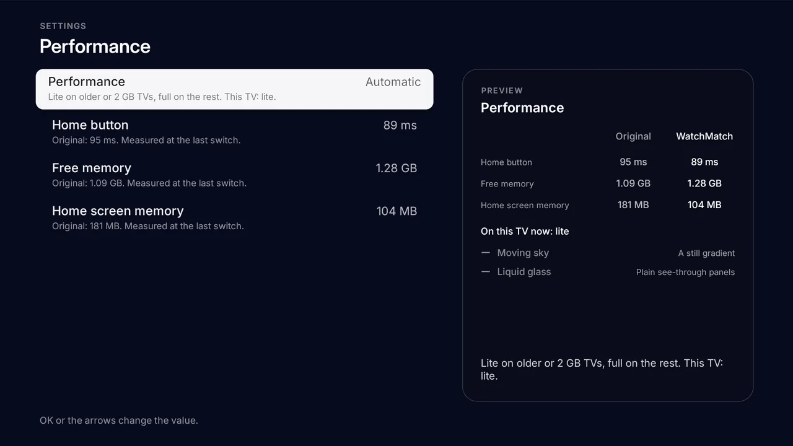
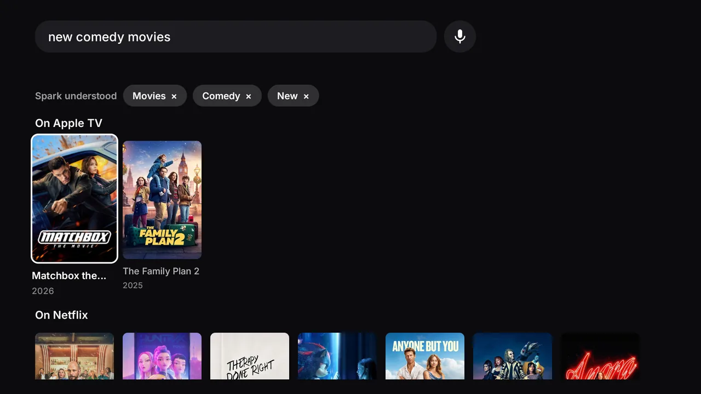
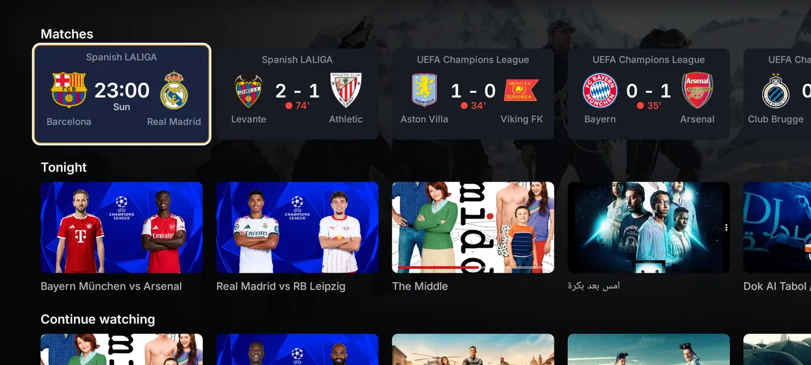

شاشة رئيسية مفتوحة المصدر لتلفاز أندرويد
تلفازك، بلا ضجيج.
WatchMatch يستبدل الشاشة الرئيسية الأصلية بأخرى سريعة وخالية من الإعلانات وتحمل ذوقك. ابحث بكلماتك، تابع فريقك مباشرة، وارجع لكل شيء بزر واحد.
- بيتا
- رخصة MIT
- مفتوح المصدر
- عربي بالكامل RTL
- بلا روت
- 1.5 ميغابايت

أرقام مقيسة، لا وعود.
قياسات من تلفاز TCL بذاكرة 2 غيغابايت وأندرويد 11، النوع الذي تتعب فيه الشاشة الأصلية.

التلفاز ما يجب أن يكون بهذا التعقيد.
إعلانات في غرفة جلوسك
بطاقات مموّلة وإعلانات تُشغَّل لحالها وصفوف لا يمكن حذفها.
شاشة رئيسية تفكّر قبل أن تردّ
تضغط زر الرئيسية وتنتظر. وعلى تلفاز 2 غيغابايت كل ضغطة لها ثمن.
تطبيقات لم تثبّتها أنت
تطبيقات عرض ومتجر وترويج جاءت مع الجهاز وتبقى تعمل.
WatchMatch هو الحل: لا يعرض إلا ما هو لك.
كل شيء في شاشة واحدة، ولا شيء لم تختره.
| الميزة | ماذا تحصل عليه |
|---|---|
| الرئيسية | |
| صفوف بيدك | رتّب الصفوف أو أخفِها، أو ابدأ من نمط جاهز: سينما أو رياضة أو أطفال أو بسيط. واختر تطبيقات الرف. |
| اكتشف والتطبيقات | أفضل 10 أسبوعياً وما يتصدر تطبيقات البث لديك، والتطبيقات الأخيرة وكل التطبيقات والمداخل. |
| الريموت والهاتف | في TCL اختر ما يفتحه زرّا نتفليكس ويوتيوب وبرايم. وأرسل روابط وعمليات بحث من هاتفك داخل شبكة البيت وبرمز PIN. |
| البحث | |
| Spark | قُل أو اكتب جملة بالعربي أو الإنكليزي. تصير مرشحات تحذفها بضغطة، ويبحث في نتائج TMDB وفي تطبيقات التلفاز. |
| Ask Spark | محادثة قصيرة تسألك عن مزاجك وما يدور في ذهنك، ثم تختار لك العناوين. افتحها من أيقونة اللمعة بجانب البحث. |
| الرياضة | |
| مركز المباريات | نتائج مباشرة مع الشعارات، وبطاقة يوم مباراة فريقك، وتنبيه قبل صافرة البداية بـ10 دقائق فوق أي تطبيق، وتنبيهات الأهداف وساعات الهدوء. |
| المظهر وسهولة الاستخدام | |
| عربي كامل من اليمين إلى اليسار | تنعكس الواجهة كلها عندما يعمل التلفاز بالعربية. أرقام غربية أو هندية، وبحث صوتي بالعربي. |
| المظهر | فاتح أو داكن أو حسب الغروب الحقيقي في مدينتك. لون مميز وساعة 12 أو 24 وسيلسيوس أو فهرنهايت. |
| سهولة الاستخدام | خط أكبر وتباين عالٍ وحركة أقل. |
| إعدادات بمعاينة حية | كل إعداد يشرح ما يفعله ويعرض أثره وأنت تغيّره. |
| الأداء | |
| خفيف على الجهاز | تطبيق بحجم 1.5 MB ولوحة رسم واحدة وبلا تخصيص ذاكرة أثناء الرسم. وضع Lite يُختار تلقائياً على التلفازات الضعيفة. زر الرئيسية في 100 ms مقابل 180 ms. |
| الاعتمادية | |
| يتحمل انقطاع الكهرباء | وقت موثوق ومحاولات متكررة وصفوف محفوظة وكتابة آمنة تُبقيه ثابتاً بعد أي انقطاع. |
| حارس الأمان | يرجع إلى الشاشة الرئيسية الأصلية بعد 3 انهيارات في 5 دقائق. |
| الخصوصية والأمان | |
| بلا إعلانات وبلا تتبع | لا حسابات ولا تحليلات. ومفاتيحك في ملف على حاسوبك. |
| بلا روت وقابل للتراجع | التطبيقات تُوقَف ولا تُحذف. «الأصلي» يرجع كل شيء. |
| المنصات | |
| الأجهزة | جوجل TV وأندرويد TV (أندرويد 9 فأحدث). |
Spark
Spark يفهم الجُمل.
اضغط زر المايك أو اكتب. يقسّم Spark كلامك إلى مرشحات للنوع والتصنيف والحقبة والبلد، ثم يبحث في نتائج TMDB وفي التطبيقات المثبّتة على التلفاز في وقت واحد.
افلام عربيه قديمه
أفلام عربية قديمةnew gangster movies
جريمة، من آخر 3 سنواتمسلسل بريكينج باد
مسلسل Breaking Badforeign comedy movies
كوميديا غير عربية
- مرشحات تحذفها بضغطة واحدة
- الحقب: جديد، قديم، عقد، سنة أو مدى
- البلدان: عربي، تركي، كوري، هندي، ياباني، مصري، خليجي، أمريكي
- الكلمات التي لا يعرفها تصير عنواناً

العربية
العربية ميزة، لا ترجمة.
عندما تكون لغة التلفاز العربية تنقلب الواجهة كلها إلى اليمين: التبويبات والصفوف ومسار التركيز والإعدادات وأرقام الأفضل 10.
- تتبع لغة التلفاز تلقائياً، أو اختر الإنكليزية أو البرتغالية أو الإسبانية أو العربية
- أرقام غربية (123) أو هندية (١٢٣) حسب اختيارك
- بحث صوتي بالعربي وجمل عربية في Spark
- النص المختلط يحافظ على اتجاهه، مثل عنوان إنكليزي داخل جملة عربية
الصور في هذه الصفحة تعرض الواجهة الإنكليزية.
لا يفوتك صافرة البداية.
اختر فرقك ودورياتك من التلفاز. مبارياتها تتصدر الصف، وتنبيه يظهر قبل 10 دقائق فوق أي تطبيق، ونتيجة مباشرة في الزاوية مع تنبيهات الأهداف. وساعات الهدوء تترك البيت ينام.

اجعل الرئيسية على ذوقك.
- محرر الصفوف مع أنماط جاهزة: سينما ورياضة وأطفال وبسيط
- رف التطبيقات بالترتيب الذي تريده
- أزرار الريموت لأجهزة TCL: اختر ما يفتحه نتفليكس ويوتيوب وبرايم
- فاتح أو داكن أو حسب الغروب الحقيقي؛ لون مميز؛ ساعة 12 أو 24
- حجم الخط وتباين عالٍ وحركة أقل
- رفيق الهاتف: أرسل روابط وعمليات بحث من هاتفك، داخل شبكة البيت فقط وبرمز PIN
آمن من التصميم.
بلا إعلانات وبلا تتبع
لا حسابات ولا تحليلات.
مفاتيحك لك
مفاتيح API في ملف على حاسوبك يتجاهله git.
بلا روت
يستخدم ADB الخاص بالتلفاز من داخله.
قابل للتراجع كلياً
التطبيقات تُوقَف ولا تُحذف. «الأصلي» يرجع كل شيء.
ثبّته في عشر دقائق تقريباً.
تحتاج تلفاز أندرويد أو جوجل (أندرويد 9 فأحدث) وحاسوباً على شبكة الواي فاي نفسها. أولاً فعّل تصحيح USB: الإعدادات، النظام، حول، اضغط رقم الإصدار 7 مرات، ثم خيارات المطور.
مع Claude Code
الطريقة السهلةgit clone https://github.com/mamer12/watchmatch
cd watchmatch
# افتح Claude Code هنا وقل:
# "Install WatchMatch on my TV at 192.168.1.50. I live in Baghdad."مع adb
الطريقة اليدوية./build.sh
adb connect 192.168.1.50:5555
adb install -r WatchMatch.apk
# لأجهزة TCL فقط:
adb shell "appops set io.watchmatch AUTO_START allow || appops set io.watchmatch APP_AUTO_START allow"من صفحة Releases
بلا أدوات بناءنزّل WatchMatch.apk ثم نفّذ adb install -r. وللحصول على الترشيحات الرائجة ابنِه بنفسك بمفتاح TMDB خاص بك.
افتح صفحة Releasesأسئلة شائعة
هل هو آمن؟
لا يحذف أي تطبيق، ويضع الصورة والصوت والمداخل وخدمات جوجل في قائمة محمية، ويمكن التراجع عن كل شيء. والشيفرة مفتوحة لتقرأها.
هل يحتاج روت؟
لا. بعد أن تسمح بالتصحيح مرة واحدة يستخدم التطبيق ADB الخاص بالتلفاز عبر 127.0.0.1.
على أي أجهزة يعمل؟
جوجل TV وأندرويد TV من أندرويد 9: TCL وسوني وهايسنس وفيليبس وشاومي وChromecast وGoogle TV Streamer وonn 4K وNVIDIA Shield.
لماذا تحتاج TCL إلى appops؟
TCL تمنع الخدمات الخلفية افتراضياً، فلا يعمل التبديل ولا حارس الأمان. سطرا appops يسمحان لها.
كيف أرجع للأصلي؟
افتح WatchMatch ثم الشاشة الرئيسية ثم «الأصلي». يرجع كل شيء كما كان. وبعد ثلاثة انهيارات في خمس دقائق يرجع تلقائياً.
هل أحتاج مفتاح TMDB؟
فقط لترشيحات الأفلام الرائجة وصور شاشة التوقف. مجاني ويستغرق دقيقتين.